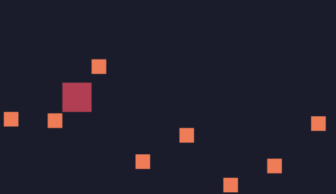

敌人
通常游戏里有7种角色：
1、玩家
2、敌人
3、食物（包括金币、血包、装备等）
4、自己发射的炮弹
5、敌人发射的炮弹
6、碰到后被阻挡的障碍物（比如墙）
7、碰到后会死或掉血的障碍物（比如深坑、河流）
我们用r="e"代表该角色为敌人，写一个产生敌人并加入到gos（gameobjects）的函数：
function newenemy()
local e={
x=239,
y=math.random(0,135),
vx=-1,
vy=0,
c=2,
r="e" --role enemy
}
table.insert(gos,e) --add enemy to gameobjects
end
接下来，需要用到一个帧的概念。动画中，之所以能动起来，是因为一帧一帧的重复绘制。
因为游戏是一个循环绘制的过程，因此，每绘制一次，让一个变量自增，通过判断变量能被多少整除的形式，来确定一个时间间隔。这个时间间隔并不是秒或毫秒，而是循环了多少帧。
在TIC中，增加t=t+1
t=0
function TIC()
t=t+1
tup() --t update
input()
update()
cls(0)
draw()
end
之后，在tup中，用t来判断：
function tup()
if t%50==0 then
newenemy()
end
end

可以看到，敌人与玩家相遇却穿梭而过。因为目前还没有做碰撞检测。请看下一篇《碰撞检测》。